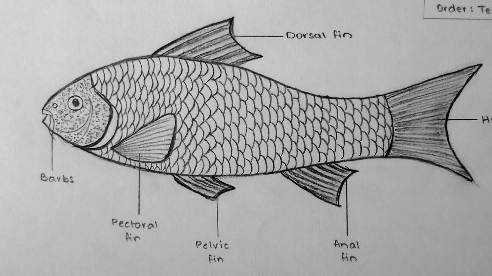

Practical on Labeo rohita (Rohu Fish)
Introduction
Labeo rohita, commonly known as Rohu, is a freshwater fish of high economic importance in Indian aquaculture. It is widely cultured due to its fast growth and high market demand.
Scientific Classification
- Kingdom: Animalia
- Phylum: Chordata
- Class: Actinopterygii
- Order: Cypriniformes
- Family: Cyprinidae
- Genus: Labeo
- Species: Labeo rohita
Morphology
- Body: Elongated, laterally compressed, covered with smooth cycloid scales.
- Head & Mouth: Terminal mouth with thick lips.
- Fins: Well-developed dorsal fin, forked caudal fin.
- Color: Silvery with a bluish or reddish tint.
Habitat & Distribution
- Found in rivers, lakes, ponds, and reservoirs of South and Southeast Asia.
- Prefers clean, slow-moving freshwater with moderate vegetation.
Feeding Habits
Omnivorous, primarily feeds on phytoplankton, zooplankton, algae, and organic matter.
Reproductive Biology
- Breeding Season: Monsoon (June–August).
- Spawning Habit: Natural breeding in rivers, artificial breeding in hatcheries.
- Egg Hatching: 24-48 hours after fertilization.
Economic Importance
- Aquaculture: Major species in composite fish culture.
- Food Industry: High in protein and omega-3 fatty acids.
- Fisheries Business: High demand in markets.
- Employment: Supports fishermen and hatchery owners.
Diseases & Threats
- Common Diseases: Fungal infections, bacterial diseases.
- Threats: Overfishing, pollution, habitat destruction.
Conservation & Management
- Hatchery-based seed production for sustainability.
- Regulated fishing to prevent overexploitation.
- Water quality management to reduce pollution impact.
Diagram

Fig: External structure of Labeo rohita
Conclusion
*Labeo rohita* is a commercially important freshwater fish species with great economic and ecological significance. Sustainable fishing and aquaculture practices are essential for its conservation.